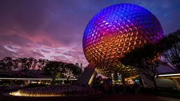
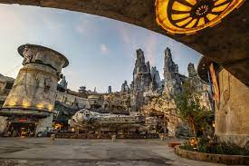
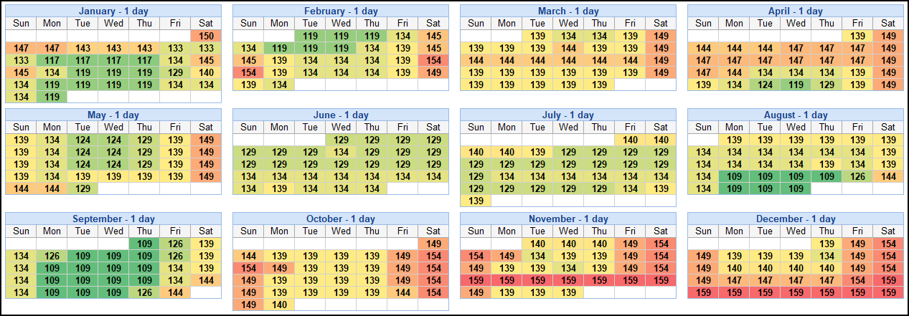
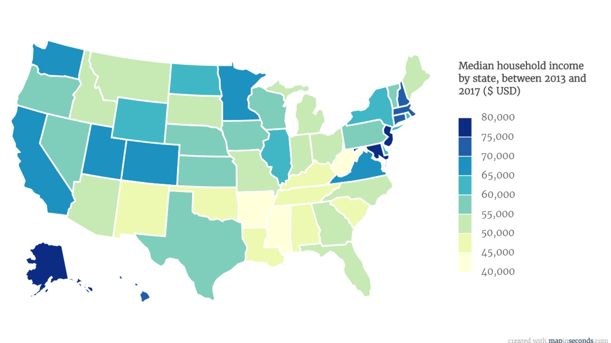

In 1971, the swampy everglades of Kisame Flordia transformed into what would start as a family park and become a power-hungry conglomerate. Disney World opened their door on Oct. 1st, 1971. At first, they only had one park, the Magic Kindom. This park only included a few attractions such as the Mad Tea Party, Jungle Cruise, It's a Small World, The Hall of Presidents, and the Monorail system. During this time entry into the park cost no more than a few dollars. Flash forward to 2022 and the price of entry has grown by a substantial amount.
The Present
Stepping through the magical doors of Disney World is not what it once was. Disney has expanded beyond even what Walt himself imagined for the park. Since its opening, there has been an addition of three major parks. Through the last decade, there have been many additions and renovations. If you decide to step into the beautiful world of Pandora, located in the depths of Animal Kingdom, it is as if you have immersed yourself inside the mystical film of Avitar. Another addition was Galaxy's Edge in Hollywood Studios. This attraction is 14 acres and transports guests through the world of Batuu. These additions have made Disney what it is, a powerhouse.
However because of this, and many other reasons, they have raised the price of tickets by an exorbitant amount. The rise in ticket prices has had a devastating effect on American families. The most "magical place on earth" is now one of the most expensive places.
Pricing
Disney World Recently celebrated its 50th anniversary, and tickets are the highest they've ever been. According to the New York Post, ticket prices have increased by nearly 4,000%. The ticket price is only the tip of the iceberg as fast passes, park hoppers, hotels, and meals also contribute to an empty wallet. Sadly, many Americans who grew up going to Disney can not afford to go back, especially if they have children.
Why the Rise in Price?
There are many reasons why Disney World has raised its prices. Covid had an impact that is still lingering. Disney raised their prices after they shut down in mid-March 20220. However, when they reopened the park in July, they raised the prices due to revenue loss. However, since the raising prices started in the early 70s, it is safe to say Disney's ticket price is more than the aftermath of inflation. A study by the Wall Street Journal found that Disney World raised ticket prices at double the rate of inflation in the 2010s.
One of the main rason for the increasing price tickets is their need to be the best. The editor of Theme Park Insider once stated, "Disney does not like to lose, not just lose, Disney doesn't even like to compete. Disney wants to dominate its competition." Since its opening Disney has remodeled the park many times. Hollywood Studios, used to be called MGM, added attractions such as Galaxy's Edge and Toy Story Land. The beautiful world of Pandora, located at Animal Kingdom, also came at no small price. These attractions were built to crush the competition, like Universal Studios. However, in order to build the attractions Disnney needs revenue which come from the tickets.
Another reason for the sky-high pirces is the way they market the tickets. Disney uses "tiered pricing models." Since they have times of the year when it is busier than others, they break down the tickets into different categories: "value, peak time, and regular." The prices for each category vary, with "peak time" being the most expensive.
Behind the Magic
Victoria Patchell, 26, is a full-time cast member and server at the Rose and Crown. As a Disney employee, Patchell gave her reasons as to why everything has gotten so expensive. Disney World was working on too many projects at once: Ratatouille ride, Galaxy's Edge, campgrounds, and hotel renovations right before they had to shut down the park. They lost revenue as she said, "they stretched themselves too thin." Due to the loss in revenue, the projects they were working on were cut back. Although the Rararullie ride was supposed to be a copy and paste version of the one in Paris, it only has one-fourth of the special affects it was supposed to have. "When Covid hit we had to stop all of our productions. Disney was losing money left and right.”
Over the years, Disney has been called out for trying to attract wealthier consumers. According to Reader's Digest, "When Disney World opened, staying at the Bora Bora Bungalows cost $29 per night. Now it can cost as much as $3,400!" Disney knows that families that make more than the average U.S. income are willing to pay outrages prices because they can. Disney doesn't care if the majority of the working class can't afford a memorable family vaccation, as long as wealthier families can come in and "price" them out.
Working at such a diverse place like Disney she finds it interesting to see how much people are willing to spend, "I know some British families are spending $30,000 bringing a family of 6 staying for about 2-4 weeks, she said. That's a down payment on a house to come to Disney.”As for Disney World "catering to the wealthy," Patchell agrees. In 2018 Disney introduced Signature Service." Their job is to cater to people that, "have more money than common sense." She explained that people will give Signature tens of thousands of dollars just to put on a special birthday party for their kids. Another group Disney World caters to is its shareholders. If the shareholders are not happy than nobody is.
When Patchell first started at Disney World the price of tickets was only 100 dollars, now they are over 150 dollars. She noticed, from her experience, that fewer people have been attending the park. "More families that have been going every year, or even twice, are starting to come every other year. Many of her friends and family are considering not purchasing the passes anymore. If you live in Florida, you can only buy the top-tier season passes, it's the only one available. Disney World use to have many more options, with differing price ranges, but now they only have one. This gives people no option to spend less money. Although she, and her co-workers, want the prices to come down, they don't foresee the prices going down anytime soon.

@piechartpirate Walt Disney World ticket price increase since 1971 #disney #disneyworld #inflation #datatok ♬ Disney-style fanfare-style BGM - harryfaoki
Who does this Effect?
A survey by Insider, on May 21st, asked 1,086 people if they would visit the theme park that year. Around 26% of responses stated they would "probably not attend," while 20% said they "definitely would not attend." Under a deeper analysis, they found that more than 50% of respondents said that Disney World was too expensive to warrant a trip. Among these respondents, it seemed that price was a concern for families earning less than $100,000 a year. The lack of income and the rising price of tickets is a problems because the majority of Americans can not afford them.
The avrage U.S. income is $31,133. If you factor in other expenses such as mortgage, taxes, gas, and food then a trip to Disney World seems like a distant dream. As stated in the Washington Post, Scott Smith, a former Disney cast member and a professor of hospitality at USC said, "They've priced middle-class families out." Disney tickets are over $150. A trip for a family of four would cost thousands which many families can not afford based on the avrge income.
The original goal of Disney was, "to be a place where parents and children could have fun." The values they pride themselves on include decency, quality, and community. Their recent prices have contradicted their statements that prevent the majority from obtaining access to their parks. If Disney truly cares about the community, as they claim, they should consider all the data that shows how they are leaving families in the dust. Disney World should be a place where anyone can go, not just the select few that can afford it.
Factoring in the Magic
Although there are many statistics on the rising price of Disney tickets, one can not just look at the numbers. That is not how Disney World operates. When you don't look at guest satisfaction, and the whole picture, that's when things fall apart with this company. According to Patchell, "You need to look at how your guests are feeling." There is a happy medium between a guest's experience and what they are willing to pay. For some people the Starcruiser A 2-Night, Immersive Adventure is woth $6,000.
If you want the magic then the price is right. Patchell says, "I will say just from the ever optimist cast member side of me; when the kids have their first trip I can see the sparkle in their eye, its worth it. If your family has the opportunity and is willing to do it, then it may be worth going. Everyone needs a first Disney memory that they will never forget. “We need to not price people out, and not have people sell their house, for people to come. We need to try to do everything in our power to make it worth it so they are financially able to come back.